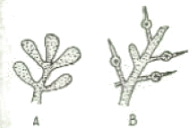

수산양식기사 (2014-08-17 기출문제)
1과목: 어류양식학
1. 동자개 자어가 먹이를 찾아 수면 위로 부상하는 시기는?
- 부화 직후
- 부화 2 ~ 3일 후
- 부화 5 ~ 7일 후
- 부화 10 ~ 14일 후
(정답률: 68%)

2. 미꾸리의 생태에 관한 설명으로 틀린 것은?
- 산란기는 6월 전후로 주로 비가 오고 난 뒤 맑은 날에 많이 산란한다.
- 알은 점착성란으로 25℃에서 약 40시간 후에 부화한다.
- 수컷의 등지느러미 아래에는 긴 혹이 있다.
- 암컷의 가슴지느러미는 수컷보다 1.5배 정도 크다.
(정답률: 76%)
3. 해산어류 자어기의 먹이로 로티퍼를 배양하고자 한다. 1mL에 100개체인 로티퍼 1 톤이 필요한 경우 하루에 필요한 클로렐라의 양은?
- 2 ~ 3억 개체/mL 농도의 클로렐라 1톤
- 2000~3000만 개체/mL 농도의 클로렐라 1톤
- 200 ~ 300만 개체/mL 농도의 클로렐라 1톤
- 20 ~ 30만 개체/mL 농도의 클로렐라 1톤
(정답률: 72%)
4. 노지 양식장에서 발생하는 미크로시스티스의 발생과 염소량의 관계가 바르게 짝지어진 것은?
- 염소량 0.1‰ - 전혀 발생하지 않음
- 염소량 1‰ 이하 - 발생 시작
- 염소량 6‰ 이상 - 거의 발생하지 않음
- 염소량 7‰ - 비교적 많이 발생
(정답률: 69%)
5. 자연 채집한 방어 중 좋은 종묘를 구입할 때에 적용되는 사항으로 옳은 것은?
- 기생충이 다소 있더라도 어체의 크기가 고른 것
- 사육가두리 내에서 각 개체들이 잘 분산되어 유영하고 있는 것
- 체색이 옅은 검정색을 띠고 있는 것
- 겉보기에 둥글둥글하게 살이 쪄있는 것
(정답률: 79%)
6. 조피볼락의 자어에서 추광성을 나타내기 시작하는 시기는?
- 출산 직후
- 출산 1주 후
- 출산 2주 후
- 출산 3주 후
(정답률: 84%)
7. 넙치를 육상사육수조에서 양성하고자 한다. 넙치의 적정 수온범위 내에서 수조의 환수율이 10 ~ 12 회전/일 인 경우 m2 당 양성 밀도로 가장 적정한 것은?
- 4kg 이하
- 5 ~ 15kg
- 20 ~ 30kg
- 35 ~ 50kg
(정답률: 82%)
8. 종묘생산을 위한 잉어 친어의 설명으로 틀린 것은?
- 길러낸 것 중에서 빨리 자라고 튼튼하며 계통이 확실한 것을 선택한다.
- 친어는 가급적 저밀도로 수용하는 것이 좋다.
- 수컷은 7 ~ 13년생, 암컷은 3 ~ 5년생이 좋다.
- 산란용 친어는 3 ~ 4월에 암수를 각각 다른 못에 분리하여 수용한다.
(정답률: 78%)
9. 뱀장어용 EP 사료에 대한 설명으로 틀린 것은?
- 부상 사료이다.
- 사료 제조과정 중 고온 고압을 가하여 만든다.
- 어분의 함량이 반죽사료보다 높다.
- 알파(α) 전분을 쓰지 않는다.
(정답률: 62%)
10. 참돔의 일반적인 자연 산란 시기는?
- 1~3월
- 4~6월
- 7~9월
- 10~12월
(정답률: 66%)
11. 현재 우리나라에서 주로 양식하고 있는 뱀장어의 학명은?
- Anguilla japonica
- Anguilla anguilla
- Anguilla mamorata
- Anguilla rostrata
(정답률: 83%)
12. 어류의 배합사료에 필요한 수용성 비타민은?
- 비타민 E
- 비타민 D
- 비타민 A
- 비타민 C
(정답률: 87%)
13. 연어의 알은 어느 것에 속하는가?
- 점착침성란
- 분리침성란
- 분리부성란
- 점착부성란
(정답률: 74%)
14. 자주복 수정란을 운반 및 취급하고자 할 때 가장 적절한 시기는?
- 수정 후 6 ~ 7일 사이
- 발안기 전후
- 수정 후 1 ~ 4일 사이
- 수정 후 5일 부터
(정답률: 57%)
15. 참돔이나 넙치 등의 자치어 사육에 필요한 관리사항으로 가장 거리가 먼 것은?
- 자어 사육수조에 Chlorella 첨가
- 조도의 조절
- 영양염류의 첨가
- 수온과 통기 조절
(정답률: 57%)
16. 100g 정도 되는 은연어의 해수양식을 위해 해수에 순치시킨다면 가장 적당한 해수 순치기간은?
- 1 일간
- 3 일간
- 7 일간
- 10 일간
(정답률: 72%)
17. 4배체 유도법이 아닌 것은?
- 무지개송어의 경우 수정 5시간 50분 후 492 kg/cm2의 수압을 4분간 처리하면 100%의 4배체를 얻는다.
- 틸라피아의 경우 수정 95분 후 11℃에서 60분간 저운 처리를 하면 100%의 4배체를 얻는다.
- 잉어의 경우 수정 5분 후 0 ~ 0.2℃에서 60분간 저온 처리하면 92%의 4배체를 얻는다.
- 채널메기의 경우 수정 80분 후 41℃에서 3분간 고온 처리를 하면 62%의 4배체를 얻는다.
(정답률: 67%)
18. 다음 중 질이 낮은 사료를 이용하기에 가장 적합한 양식법은?
- 유수식 양식
- 가두리 양식
- 저밀도 정수식 지중양식
- 고밀도 정수식 지중양식
(정답률: 63%)
19. 잉어 양식에서 친어지와 겸용으로 사용할 수 있는 못은?
- 월동지
- 산란지
- 부화지
- 치어지
(정답률: 72%)
20. 사육지 내에서의 대사 노폐물의 분해 작용을 기대하는 사육 방식은?
- 정수식 지중양식
- 유수식 양식
- 가두리 양식
- 순환여과식 양식
(정답률: 51%)
2과목: 무척추동물양식학
21. 다음 중 전복의 산란자극 방법으로 가장 적합한 것은?
- 절개법
- 전기자극법
- 자외선 조사해수 자극법
- 세로토닌 주사법
(정답률: 82%)
22. 해삼이 하면에 들어가는 수온으로 가장 적합한 것은?
- 15℃
- 20℃
- 25℃
- 30℃
(정답률: 62%)
23. 피조개의 D상 유생과 보리새우 조에아 유생의 공통점은?
- 저서생활을 시작한다.
- 발과 안점이 발달한다.
- 부화 후 처음을 먹이를 먹는다.
- 난에서 부화한 직후의 유생기이다.
(정답률: 75%)
24. 진주담치에 대한 설명으로 맞지 않은 것은?
- 진주담치는 원래 한해성 종류이다.
- 진주담치의 학명은 Crenomytilus grayanus 이다.
- 진주담치 암컷 생식소의 색은 황적색이다.
- 진주담치의 산란 성기는 3~4월이다.
(정답률: 57%)
25. 부화시기가 가까운 꽃게 외란의 색깔은?
- 황색
- 주황색
- 황백색
- 암흑색
(정답률: 62%)
26. 수심이 20 m 되는 곳에서 가리비를 채묘할 때 가장 알맞은 채묘수층은?
- 수면으로부터 6 m 깊이까지
- 중층으로부터 저층부근까지
- 저층으로부터 2 m 까지
- 중층 부근
(정답률: 69%)
27. 기수산 rotifer를 먹이생물로 사용하지 않는 것은?
- 새우 유생사육
- 피조개 유생사육
- 돔 유생사육
- 꽃게 유생사육
(정답률: 54%)
28. 새우 축제식 양식장의 수질관리에 대한 설명 중 틀린것은?
- 파래와 같은 녹조류가 번식하는 것을 막는다.
- 양성지의 양성기간이 길어지면 저질이 산화상태가 되므로 저질의 산화방지가 중요하다.
- 황화수소 발생을 막기 위해 산화철제를 투입한다.
- 용존산소를 높이기 위해 수차나 스크류 등을 설치한다.
(정답률: 51%)
29. 바지락의 종묘생산에 관한 내용으로 올바르게 설명된 것은?
- 족사의 발달로 채묘기 채묘가 용이하다.
- 자연 채묘지역은 와류가 생기는 곳이 좋다.
- 채묘기와 완류식 시설의 생산량 차이는 없다.
- 자연치패가 발생하는 곳은 연안에서 멀리 떨어져 있다.
(정답률: 70%)
30. 다음 중 알테미아의 부화 특징과 관계가 없는 것은?
- 수온이 증가할수록 산소소비량이 증가한다.
- 부화율에 영향을 가장 크게 미치는 요인은 난질이다.
- 내구란의 부화는 일반 해수의 24 ~ 30% 염분에서 가능하며, 염분이 높을수록 부화에 소요되는 시간이 짧아진다.
- 차아염소산소다를 이용하여 외각을 제거해 부화율을 높이기도 한다.
(정답률: 56%)
31. 천해의 생태구역 중 수산생물의 양식장으로 이용되는 곳에 관한 설명으로 가장 적합한 것은?
- 양성장으로 이용되는 곳은 조간대, 상천해대, 중천해대 및 하천해대이다.
- 바닥양성장은 종류에 따라 조간대, 상천해대, 중천해대 중에서 선정된다.
- 나뭇가지, 탱크, 못 및 조위망 양성장은 주로 조간대, 상천해대에서 선정된다.
- 수하양성장은 조간대, 상천해대, 중천해대중에서 선정된다.
(정답률: 52%)
32. 성숙한 피조개 정소의 색으로 맞는 것은?
- 담홍색
- 담황색
- 담록색
- 담청색
(정답률: 75%)
33. 굴의 실내 인공채묘에 대한 설명을 옳지 않은 것은?
- 실내 채묘 방법은 바닥식, 수하식, 굴수용망을 이용한 방법이 있다.
- 수하식은 고른 부착을 유도할 수 있다.
- 바닥식은 한 번에 많은 양을 채묘할 수 있다.
- 굴수용망은 수질관리가 어렵다.
(정답률: 60%)
34. 이매패류의 유생발달 과정 중 저서생활을 위해 발달하는 운동기관은?
- 면반
- 발
- 섬모
- 인대
(정답률: 76%)
35. 대합류의 자연채묘에 주로 사용되는 채묘방법은?
- 완류식 채묘
- 나뭇가지식 채묘
- 로프식 채묘
- 고성식 채묘
(정답률: 78%)
36. 보리새우와 대하에 대한 설명 중 틀린 것은?
- 보리새우의 주산란기는 7 ~ 8 월이고 대하는 4 ~ 5월이다.
- 난소의 색깔은 둘 다 청록색이다.
- 보리새우는 잠입하는 습성이 있고, 대하는 뛰어오르는 습성이 있다.
- 교미한 보리새우에는 교미전을 볼 수 없으나 대하는 교미전을 갖는다.
(정답률: 79%)
37. 전복의 이식을 위한 수송에 대한 설명 중 맞는 것은?
- 환경변화에 약한 소형은 이식용 종묘로 부적합하다.
- 장거리 육상 수송은 주로 해수 중 수송을 한다.
- 온도가 낮을수록 공중활력은 커서 생존기간이 길다.
- 수온이 낮은 12월 ~ 1월이 수송에 가장 적합한 시기이다.
(정답률: 64%)
38. 참굴의 생식세포의 형성에 있어 그 활동이 시작되는 기초수온은?
- 8℃
- 10℃
- 12℃
- 14℃
(정답률: 56%)
39. 다음 이매패류 중 생태적 분류에서 일시부착성 동물은?
- 바지락
- 지중해 담치
- 진주조개
- 참가리비
(정답률: 62%)
40. 다음 중 암수동체인 동물로 짝지어진 것은?
- 우렁쉥이 - 국자가리비
- 바지락 - 소라
- 전복 - 개량조개
- 문어 - 해삼
(정답률: 68%)
3과목: 해조류양식학
41. 참김과 둥근돌김이 별개의 종을 구별되는 주된 이유는?
- 염성 (捻性)이 다르다.
- 생활사가 다르다.
- 영양 번식력이 다르다.
- 생육환경이 다르다.
(정답률: 73%)
42. 큰참김의 양식성으로서의 단점은?
- 엽체 탈락에 약하다.
- 병해에 약하다.
- 색택이 나쁘다.
- 수확량이 적다.
(정답률: 70%)
43. 자연 번식장에서 감태의 회복 상태가 가장 좋은 조건은?
- 가을에 2x50 m의 직사각형으로 완전채취 한 때
- 봄에 2x50 m의 직사각형으로 완전채취 한 때
- 가을에 10x 10 m의 정사각형으로 완전채취 한 때
- 봄에 10x 10 m의 정사각형을 완전채취 한 때
(정답률: 53%)
44. 홑파래의 접합자를 받는 방법으로 틀린 것은?
- 모조를 여과 해수로 씻은 다음 하룻밤 어두운 곳에서 그늘말리기를 한다.
- 음건 후 밝은 창가에서 배우자를 방출시킨다.
- 접합자는 (+)주광성이므로 광선을 사용해 모여들게 한다.
- 접합자를 받는 채묘기로 폴리에틸렌 조면사를 사용한다.
(정답률: 73%)
45. 김을 채묘한 뒤에 수온이 13℃로 될 때 까지의 경과일 수가 많은 해에 흉작이 되기 쉬운 이유는?
- 양식장의 생산력이 가장 큰 때의 순생산 속도가 낮기 때문이다.
- 양식장의 생산력이 가장 큰 때와 순생산 속도가 높을 때 일치되기 쉽기 때문이다.
- 현존량이 가장 적은 때와 양식장의 생산력이 낮은 때가 일치되기 쉽기 때문이다.
- 순생산 속도가 높은 때와 양식장의 생산력이 낮은 대가 일치되기 쉽기 때문이다.
(정답률: 53%)
46. 다시마 양성관리에 관한 설명 중 틀린 것은?
- 시설장소는 조류가 다소 빠른 곳을 택한다.
- 저질은 자갈, 모래로 된 곳이 가장 좋다.
- 4 ~ 5월경에는 m 당 25 ~ 50개체가 되도록 솎아준다.
- 시설장소의 수심은 4 ~ 5m 가 적합하다.
(정답률: 33%)
47. 미역의 생장과 수온과의 관계를 설명한 사항 중 틀린것은?
- 유주자의 방출과 착생은 17 ~ 20℃가 최적이다.
- 23 ~ 25℃에서 배우체의 암수 구별이 뚜렷하고 서서히 생장한다.
- 유엽의 생장은 가을 15 ~ 17℃일 때가 가장 좋다.
- 5 ~ 10℃에서 성엽체의 생장이 양호하다.
(정답률: 55%)
48. 미역채묘를 위한 포자엽 준비과정을 바르게 설명한 것은?
- 포자엽의 색택은 다갈색이나 흑갈색이 좋다.
- 가장자리의 색이 연하고 딱딱하며 점액이 없는 것을 선택한다.
- 포자엽을 냉해수에 넣어서 운반하는 것이 좋다.
- 포자엽은 저녁 때 채취하여 일출 전까지 그늘말리기를 한다.
(정답률: 49%)
49. 다음의 그림에 나타난 우뭇가사리의 가지 이름은?

- A: 낭과가지, B: 포복지
- A: 낭과가지, B: 사분포자가지
- A: 사분포자가지, B: 포복지
- A: 사분포자가지, B: 낭과가지
(정답률: 57%)
50. 톳의 생활사에 대한 설명으로 옳은 것은?
- 자웅동주이며 생식기 가지를 가진다.
- 무성세대만 있는 다년생 해조류이다.
- 포복지에 의하여 새 개체를 만드는 영양 번식을 한다.
- 이형세대교번을 한다.
(정답률: 73%)
51. 2년생 다시마 양식에서 10 ~ 12월에 재생이 시작되면, 생장대에서 30 cm 정도 남기고 잎을 잘라내는데 그 이유는?
- 재생이 잘 되게 하기 위해
- 이끼벌레의 산란을 방지하기 위해
- 영양염을 절약하기 위해
- 식량으로 이용하기 위해
(정답률: 70%)
52. 냉동발의 장점과 가장 거리가 먼 것은?
- 초기 김 갯병의 피해 극복
- 김의 맛과 향의 향상
- 양식기간의 연장
- 해적 생물의 구제
(정답률: 71%)
53. 주광성이 있는 포자는?
- 미역의 유주자
- 청각의 접합자
- 홑파래의 유주자
- 톳의 배포자
(정답률: 72%)
54. 미역의 종묘배양 관리에 관한 내용 중 옳은 것은?
- 채묘 직후는 착생포자가 탈락될 염려가 있으므로 3 주간은 물갈이를 하지 않는다.
- 배우체 때는 질소 보다 인(燐)을 많이 요구하므로 시비시 질소와 인의 비율을 1:3으로 해준다.
- 아포체(芽胞體)는 고수온에 약하므로 암배우체 3개 세포, 수배우체 10개 세포 이상으로 성장하지 않도록 생장을 억제한다.
- 수온 24℃가 될 때까지 단세포 상태로 있을 때에는 조도(照度)를 4000 ~ 5000 lx로 올리고 시비하여 생장을 촉진시킨다.
(정답률: 63%)
55. 김 종묘 배양장에 대한 설명을 옳은 것은?
- 가능한 직사광선이 잘 들어올 수 있도록 한다.
- 수온 변화를 방지하기 위해 가능한 통풍이 되지 않도록 한다.
- 조도와 온도의 변화가 비교적 적은 북향 건물이 좋다.
- 수조의 깊이는 수하식과 평면식 모두 80 cm 내외가 적당하다.
(정답률: 74%)
56. 뜬흘림발의 성질과 가장 거리가 먼 것은?
- 수광시간이 길다.
- 김발의 수명이 짧다.
- 2차아에 의한 번식이 많이 있다.
- 수심이 깊은 외해에서도 양식이 가능하다.
(정답률: 76%)
57. 엽면시비의 장점이 아닌 것은?
- 대부의 양식장에서 실시할 수 있다.
- 적은 양의 비료로 효과가 크다.
- 시간의 제약이 없다
- 시비효과를 측정할 수 있다.
(정답률: 64%)
58. 김 양식 방법 중 2차아(芽)의 부착이 적은 것은?
- 뜬흘림발(부류식)
- 떼발(염홍)
- 뜬발(부동식)
- 섶(일본홍)
(정답률: 73%)
59. 다음 홍조류 중 염분농도가 다소 낮은 곳에서도 생육 하는 종류는?
- 도박
- 우뭇가사리
- 풀가사리
- 꼬시래기
(정답률: 45%)
60. 다시마의 생장형식은?
- 확산생장
- 개재생장
- 정단생장
- 정모생장
(정답률: 57%)
4과목: 양식장환경
61. 다음 중 양식장 pH 조절을 위해 이용하는 것과 거리가 먼 것은?
- 석회
- 중탄산나트륨
- 수산화나트륨
- 염화칼륨
(정답률: 47%)
62. 다음 중 용존 산소(DO)에 대한 설명이 가장 적절한 것은?
- 수중에 녹아있는 유리산소
- 수중생물의 호흡에 필요한 산소
- 대기 중으로부터 공급되어 지는 산소
- 광합성으로부터 유리되어 지는 산소
(정답률: 76%)
63. 수질 검사 중 KMnO4 소비량이 많다는 결과가 나왔을 때 가능성이 가장 높은 것은?
- 물속에 E. coli 가 많다.
- 물이 깨끗하다.
- 물속에 유기성 오염물이 많다.
- 혐기성 부패가 일어나고 있다.
(정답률: 65%)
64. 무지개송어 양식에서 원형 사육지의 구조설명이 틀린것은?
- 원형지의 깊이는 치어용인 경우에 수심을 30 ~ 40 cm로 하고, 식용어 육성용은 60 cm 또는 그 이상으로 하는 것이 관리에 편리하다.
- 원형지의 경사율은 5 ~ 10%로 하는 것이 찌꺼기 제거효율이 높아진다.
- 원형지의 주수구는 높은 곳의 물을 파이프를 통해서 원형지의 벽과 평행하게 주입시킨다.
- 배수구를 못 중앙에 설치하여 물을 회전 작용으로 바닥의 고형오물이 중앙 배수구 쪽으로 몰리게 하여 배수되는 물과 함께 밖으로 나가게 하는 것이 수질 관리에 좋다.
(정답률: 65%)
65. 정수식 못 양식장에서의 수질 변화 현상을 맞게 설명한 것은?
- 플랑크톤의 농도가 높으면 광선을 차단하기 때문에 전 수층이 균일한 온도 분포를 보인다.
- 바람이 없고 흐린 날이 지속될 때 수중 용존산소농도가 증가한다.
- 오염물의 생물학적 정화는 못 바닥 표면적이 넓을수록 불리하다.
- pH를 좌우하는 것은 수중 탄산염으로 동신물의 호흡과 광합성에 의해 변화한다.
(정답률: 64%)
66. 일반적인 고밀도 뱀장어사육의 수질관리로 가장 적합한 것은?
- 매일 못물의 20 ~ 30 %를 갈아주고 수차를 이용하여 산소를 보충한다.
- 수차를 이용하여 산소만 보충한다.
- 매일 2시간 마다 약 50% 의 물만 갈아준다.
- 매일 2번에 걸쳐 100 % 의 물을 갈아준다.
(정답률: 78%)
67. 사료 자동공급기에 관한 내용으로 가장 거리가 먼 것은?
- 사료 공급예정량을 조절할 수 있다.
- 사료 찌꺼기가 많을 수 있다.
- 어류의 관리가 잘된다.
- 성장률을 효과적으로 계획, 조절할 수 있다.
(정답률: 66%)
68. 뱀장어의 노지 양식장에서 여러 가지 물질들이 축적되고 분해되어 수질이 악화되면, 뱀장어 생리 기능의 조화를 깨뜨리게 된다. 이때 가장 두드러지게 나타나는 변화는?
- 먹이 부족으로 공식이 심해진다.
- 밝은 곳을 피하는 행동을 보이게 된다.
- 무리에서 벗어나서 물 표면을 유영하게 된다.
- 식욕이 줄어든다.
(정답률: 81%)
69. 적조의 원인생물이 아닌 것은?
- 고니아울락스 (Gonyaulax)
- 감노디니움 (Gymnodinium)
- 암피디니움 (Amphidinium)
- 암피포다 (Amphipoda)
(정답률: 67%)
70. 양식용수로서 지하수를 사용하기 전에 조치해야 될 처리과정은?
- 포기
- 가온
- 소독
- 여과
(정답률: 75%)
71. 못양식에서 석회 살포로 얻을 수 있는 효과가 아닌 것은?
- 살균, 소독제로서 종묘 방양 전에 살포한다.
- 칼슘이 첨가되기 때문에 갑각류에 유리하다.
- 유기산에 의한 해로운 영향을 중화시킨다.
- 물의 경도와 알칼리도를 감소시킨다.
(정답률: 55%)
72. 순환여과시스템의 순환수에서 생기는 거품은 주로 무엇때문인가?
- 암모니아
- 이산화탄소
- 아질산
- 유기물
(정답률: 68%)
73. 다음 중 자외선 조사 효과에 영향을 미치지 않는 요인은?
- 용존 유기물의 양
- 미생물의 양
- 자외선의 수중 투과 깊이
- 자외선의 잔류 정도
(정답률: 77%)
74. 여과조의 종류 중 생물 부착막 여과조가 아닌 것은?
- 활성오니법 여과조
- 살수식 여과조
- 침수식 여과조
- 회전식 여과조
(정답률: 75%)
75. 양어용수를 물리적으로 여과처리 하는 방식과 가장 거리가 먼 것은?
- 스크린 처리
- 침강 처리
- 드럼필터 처리
- 포기 처리
(정답률: 53%)
76. 가두리 어류양식장의 자가오염 원인으로 가장 주요한 것은?
- 적조
- 사료
- 생활하수
- 농약
(정답률: 71%)
77. 무독성 적조에 의해서 어류가 폐사하는 현상과 가장 직접적인 관계가 있는 것은?
- 유기물의 증가
- 산소와 헤모글로빈 결합 장애
- 세균 발생
- 질소화합물 증가
(정답률: 68%)
78. 암모니아의 성질이나 독성에 관한 설명으로 옳은 것은?
- 암모늄 이온이 유리 암모니아보다 높은 독성을 보인다.
- pH 가 1 단위 높아질수록 유리 암모니아의 양이 약 100 배 증가한다.
- 높은 농도의 암모니아는 아가미에 손상을 입힌다.
- 용존 산소량이 증가하면 유리 암모니아의 독성도 증가한다.
(정답률: 63%)
79. 양어지에서 이산화탄소의 농도가 하루 중 가장 높은 때는?
- 밤 12시
- 오전 6시
- 낮 12시
- 오후 6시
(정답률: 71%)
80. 순환여과시스템에서 다음 중 거품 수집판을 설치하는 곳으로 적당한 위치는?
- 사육조
- 침전조
- 생물여과조
- 소독조
(정답률: 59%)
5과목: 수산질병학
81. 잉어의 체표가 회백색 점액으로 덮여있는 것이 관찰되었다면 어떤 원인으로 인한 가능성이 가장 높은가?
- Gyrodactylus spp. 의 기생
- Argulus spp. 의 기생
- Benedenia spp. 의 기생
- Saprolegnia spp. 의 기생
(정답률: 49%)
82. Nocardia seriolae 균에 감염된 방어의 특징적인 증상은?
- 주둥이의 탈락
- 아가미의 결절
- 지느러미의 흑변
- 안구의 백탁
(정답률: 84%)
83. 연쇄구균증에 관한 설명이 아닌 것은?
- 백신이 개발된 후로 피해는 감소하였다.
- 방어에서는 주로 Lactococcus garvieae의 감염에 의한다.
- 전형적인 조건성 병원체이다.
- 외관상 이상이 없으나, 해부해 보면 신장에 백색 결절이 관찰된다.
(정답률: 64%)
84. 넙치의 바이러스성 질병을 진단하기 위한 컴퓨터 소프트웨어를 개발하려 한다. 다음 중 관련이 없는 질병은?
- 전염성 조혈기 괴사증
- 바러스성이 출혈성 패혈증
- 바이러스성 신경 괴사증
- 버나바이러스 감염증
(정답률: 43%)
85. 뱀장어에 곰팡이성 질병을 일으키지 않는 것은?
- Dermocystium anguillae
- Branchiomyces sanguinis
- Saprolegnia sp.
- Ochroconis tshawytschae
(정답률: 68%)
86. 참돔이나 넙치에 유행하는 Lymphocystis 병의 병원체는 다음 중 어디에 속하는가?
- lridovirus
- Rhabdovirus
- Birnavirus
- Nodavirus
(정답률: 71%)
87. 다음 중 어류의 바이러스 감염증과 각각의 외관 증상 또는 병리학적 변화를 알맞게 연결하지 못한 것은?
- 무지개송어의 전염성 췌장 괴사증 - 체색 흑화, 복부 팽만, 흰 색의 점액변
- 넙치의 랍도바이러스감염증 - 근육 내 출혈, 복부 팽만
- 잉어의 허피스바이러스성 유두종 - 만성, 양성의 표피 세포 증생
- 방어의 바이러스성 복수증 - 망막 및 신경계 세포의 괴사
(정답률: 75%)
88. 어류에 병원균이 감염되면 유사한 증상을 나타날 때가 많다. 정확한 진단을 위하여 병어로부터 병원균을 순수분리하여 진단하여야 한다. 에드와드 병원균을 분리하는데 쓰이는 선택 배지는 무엇인가?
- Nutrient agar
- SS agar
- Cytophaga agar
- BTB agar
(정답률: 68%)
89. 절창병에 대한 설명 중 틀린 것은?
- 급성은 대개 외부증상이 없다.
- 피부, 아가미, 먹이를 통하여 감염된다.
- 온수성 어류에 잘 나타난다.
- 체표에 농창을 형성한다.
(정답률: 58%)
90. 다음 중 사상체의 황반병의 주 원인이 되는 것은?
- 어둡고 통풍이 나쁜 배양장 환경
- 탄산칼슘의 조가비 표면에의 침착
- 호염성 세균
- 영양 부족
(정답률: 64%)
91. 비타민 B2가 결핍되어 성장이 둔화되고, 눈, 코, 아가미 뚜껑에 출혈점을 보이고 수정체 혼탁을 나타내는 어류는?
- 잉어
- 메기
- 무지개 송어
- 뱀장어
(정답률: 60%)
92. 갯병에 걸린 엽체의 부착기(뿌리)가 끈기가 있어서 엽체가 쉽게 유실되지 않은 것은?
- 호상균병
- 붉은갯병
- 흰갯병
- 의사흰갯병
(정답률: 71%)
93. 겨울철 유수식 잉어지에서 잉어의 체표, 지느러미 등에 회백색의 점액물질이 덮혀 있는 것이 관찰되었다면 이 병의 발생과 관련이 가장 깊은 균은?
- Pseudomonas anguilliseptica
- Aeromonas salmonicida
- Flavobacterium columnare
- Pseudomonas fluorescens
(정답률: 51%)
94. 양어지의 오수와 오니(sludge)를 혼합하여 기폭시킨 후 정치하여 오니를 침강시켜 상등수를 못에 주입시키고 오니의 일보를 반송하여 다시 사용하는 정화법은?
- 활성오니법
- 살수여과상법
- 생물환원처리법
- 광합성균에 의한 폐수처리법
(정답률: 85%)
95. 참돔의 눈 가장자리가 붉어졌다면 어떤 원인에 의한 병으로 판단되는가?
- Hexamita 충의 기생 때문에
- 아가미흡충의 기생 때문에
- Vibrio sp. 의 감염 때문에
- Mycobacterium sp. 의 감염 때문에
(정답률: 69%)
96. 방어에 쿠도아충이 주로 기생하는 부위는?
- 아가미
- 뇌
- 심장
- 근육
(정답률: 77%)
97. Pseudomonas anguilliseptica 가 주원인인 뱀장어의 질병은?
- 기적병
- 적점병
- 절창병
- 솔방울병
(정답률: 64%)
98. Hexamita 증의 설명으로 옳지 않은 것은?
- 병어는 회전운동을 하고 복수가 고여서 죽는다.
- 간세포의 괴사가 일어나는 일은 없다.
- 변질된 불량사료를 먹였을 때 발생한다.
- 연어과 어류치어의 장관 점막상피세포에 기생한다.
(정답률: 68%)
99. 전염성 췌장괴사증의 감염에서 틀린 것은?
- 난막을 통하여 감염
- 초기 치어에만 감염
- 정자를 통하여 감염
- 1년생 이상의 것에만 감염
(정답률: 59%)
100. 3대충이라는 별명을 갖고 있는 태생 흡충은?
- 피부가 화상을 입은 것과 같이 변한다.
- 복부 팽만 증상이 심하게 일어난다.
- 근육과 아가미에 결절이 생긴다.
- 창자에 화농성 염증과 카타르성 염증이 생긴다.
(정답률: 53%)